促进青春痘快速消除，喝丝瓜蒂茶
年轻人长青春痘，有些痘痘比较顽固，红红的，总是不见好。喝些丝瓜蒂茶，能促使痘痘尽快成熟，发出白色的脓头。这时候再外敷些丝瓜皮，让脓尽快出来，痘痘就能瘪下去了。
丝瓜蒂茶
【原料】
新鲜或干的丝瓜蒂6个、蜂蜜适量。
【做法】
- 家里吃丝瓜时，把切下来的丝瓜蒂留起来，晒干备用。
- 把新鲜的或晒干的丝瓜蒂放入杯中，加入蜂蜜，用沸水冲泡，闷20分钟后饮用。有条件煮水更佳。
【功效】
- 清热解毒。
- 促进青春痘消除。
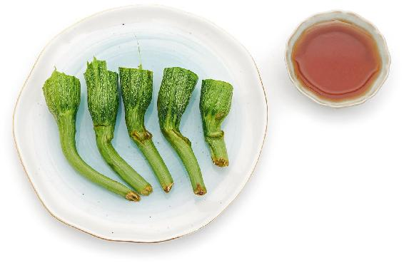
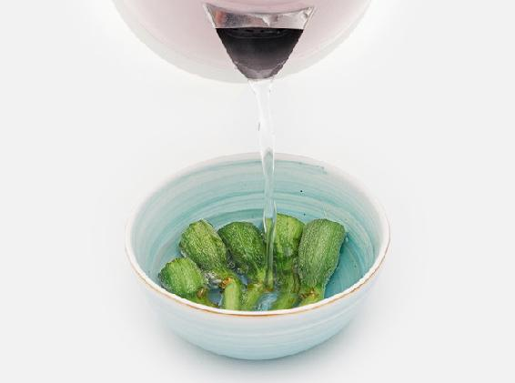
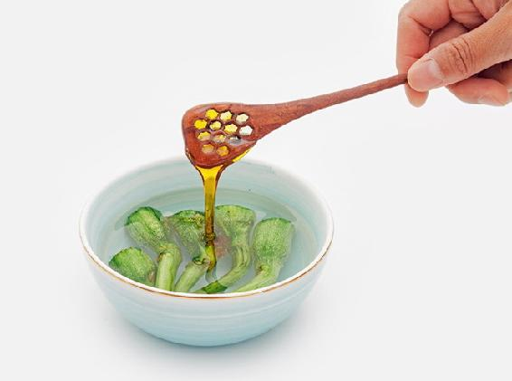
- 儿子青春期长了满脸的痘痘，中医西医都看了，一点用都没有。想到陈老师的小茶方，立马给煮了丝瓜蒂茶，喝了两天就有白色的脓冒出来，又根据陈老师的方法外敷了丝瓜皮，结果不到一个星期，红肿的痘痘就全都瘪下去了。感谢陈老师。
——9群读者
- 扁桃体发炎，感冒咳嗽太难受了，喉咙里像火烧一样痛。吃药可以暂时缓解，但是有副作用，头晕得厉害，第二天还要上课。找到老师的书，赶紧翻出了丝瓜蒂茶这一页，喝了一大壶倒头就睡，第二天早上起来喉咙竟然不痛了，烧也退了，神清气爽，太神奇了。
——芳菲
- 前几天额头上起了一个很大的疙瘩，又红又疼。前天吃丝瓜，想到陈老师讲过丝瓜皮可以用来敷熟了的疙瘩，能把脓水敷出来，我马上就敷了。果然还真的把脓水一点点敷出来了，也不红不疼了，疙瘩越来越小了。老师的方法真的好好啊！
——24群读者
- 我女儿怀孕期间嗓子疼，不能吃药，我用老师的方法，丝瓜蒂冰糖煮水，女儿喝后马上就好了。我又把这个方子推荐给我妹妹，她也喝好了。
——京津乐道
带有脓头的青春痘怎么消，喝果菊抗炎饮
调理面部油脂分泌过多、带有脓头的青春痘，特别是经常满脸长痘的青少年，可以喝这个茶饮来调理。
鱼腥草对全身各处的炎症都能消，菊花对皮肤长疖子或粉刺也有消炎作用。
如果痘痘化脓不是太严重，可以把野菊花换成菊花。野菊花是小黄花，味道很苦，比较寒，主要用于清热解毒，不用作日常保健。
果菊抗炎饮
【原料】
罗汉果6个、鱼腥草90克、野菊花30克。
【做法】
- 把罗汉果压破，掰开，连皮带核一起放入锅中。
- 加3杯清水煮开后，转小火煮40分钟左右，煮到只剩大约l杯水的量，滗出药汁。
- 锅内再加3杯清水煮开，转小火煮40分钟，煮到剩大约1杯水的量，关火，滗出。
- 把两次的药汁合在一起，放入鱼腥草、野菊花，下锅煮开后关火。
- 放入冰箱冷藏，可以放一星期。
- 每次取大约1/3杯，放入随身杯，加开水温热饮用。
【功效】
- 消炎，排毒。
- 调理青春痘。
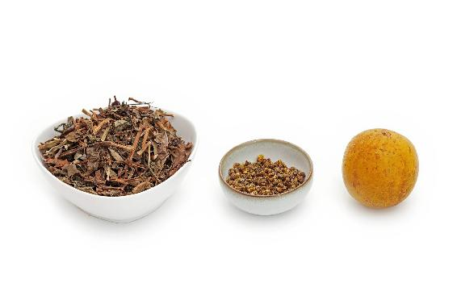
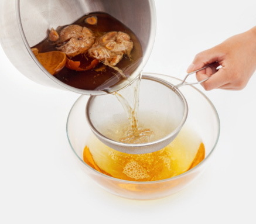
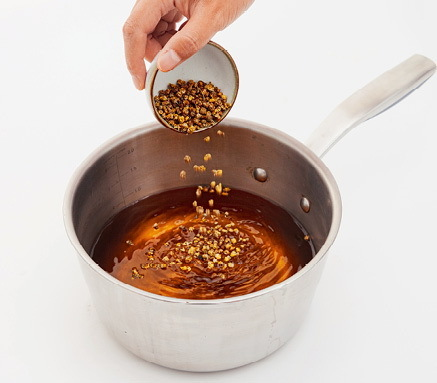
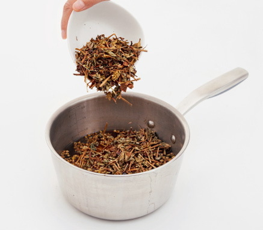
- 每天都喝果菊饮，湿疹不痒了，有所好转。
——29群读者
- 喝了果菊清饮后，眼睛胀的感觉缓解了一些。
——清
预防胃热型青春痘，调理皮肤疮疡，喝清痘消炎茶
这款茶适合面部长痘时帮助消炎排脓，对湿热型青春痘有预防的作用，适合年轻人饮用。成年人面部长痘不是青春痘，不适合用这款茶来预防。
清痘消炎茶
【原料】
鱼腥草150克（干品）、蒲公英100克（干品）。
【做法】
- 把原料分成10份，装入10个茶包袋。
- 每次取1袋，冲入沸水，不要盖杯盖，马上倒掉。
- 再次冲入沸水，5分钟后饮用，可以反复冲泡。
【功效】
- 脸部长青春痘同时经常便秘、咽痛的年轻人饮用，有抗痘的作用。
- 抗菌消炎，调理皮肤疮疡、口腔炎症。
- 喝过的茶渣可以用来敷脸，抗痘效果更好。
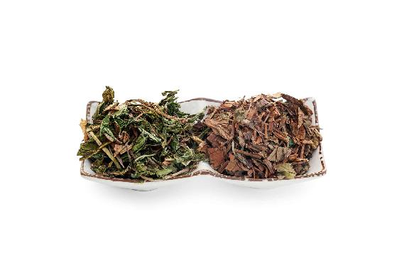
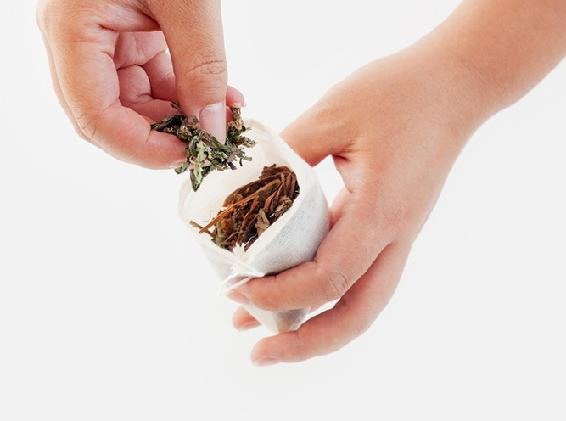
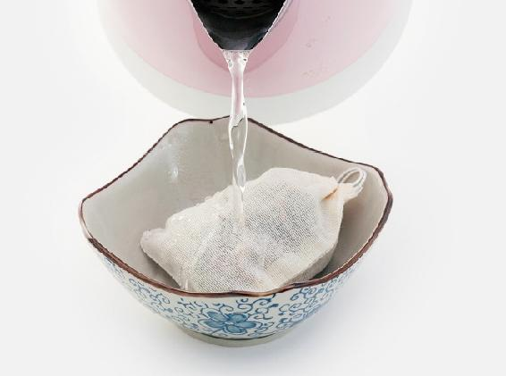
允斌叮嘱
- 孩子一个月就喉咙疼咳嗽了三次，最后这次“五一”放假在家，我就不再去医院买药了，按陈老师的方子煮了鱼腥草加蒲公英，给孩子喝了一天就有好转，连续喝三天全好了。
——yxh
- 这几天看到群里好几个同学说口腔溃疡很痛苦，我也是几乎没有间断过。身边没有鱼腥草但有蒲公英，我想着蒲公英也败火，就泡了水喝了，下午就好了。真不夸张，我试了两次，效果杠杠的！
——宁静
- 这几天喉咙痛，喝荠菜水、罗汉果、鱼腥草效果不太好。昨晚咽喉肿大，很疼，喝了大半碗蒲公英水，今天早上起床就没那么肿疼了！
——6群读者
预防“成人痘”，喝三花陈皮茶
有的人二三十岁脸上还长痘，这与青春痘不一样，我把它称为“成人痘”。
在急性期，成人痘与青春痘一样，要喝鱼腥草来调理，并可外敷马齿苋。
在平时，成人痘根据体质不同、长痘的部位不同，预防的方法也不同。寒湿重的人，痘痘长在下巴部位的，可以喝汉宫椒枣茶（见本书顺时强身篇138页）来预防；肝火旺的人，痘痘长在面部其他部位的，可以喝三花陈皮茶来预防。
三花陈皮茶
【原料】
玫瑰花60克、金银花60克、茉莉花30克、川陈皮60克、甘草30克。
【做法】
- 每次取1袋，冲入沸水，马上倒掉水。
- 闷20分钟后饮用。
【功效】
- 健胃，清热，降肝火。
- 调理急慢性肠炎。
- 预防成人痘。
- 调理胃热引起的口臭。
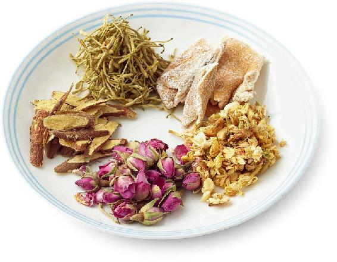
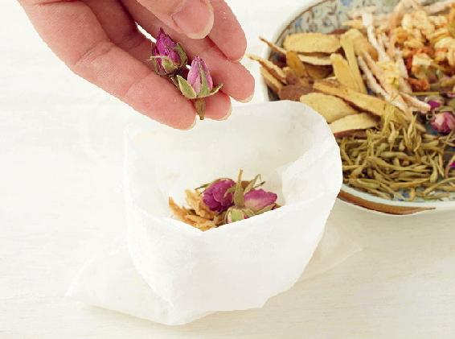
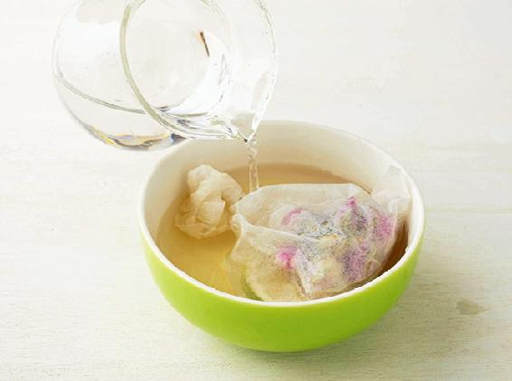
允斌叮嘱
睡眠多梦且肝火特别旺的人也可以喝。
读者评论
- 看完陈老师的祛痘视频，仔细和自己对症了一下，原来我属于气滞血瘀血虚型成人痘痘，要补气血同时还要避免受寒，因为这一切都是受寒引起的。花茶加了三花茶，早餐加了当归尾粉、玫瑰红糖和补水补油的水泡花生。今天惊喜地发现，原来由于血虚，痘痘熟不了，现在都熟了！昨天几颗红的痘痘已经都冒白头了！今天准备去买丝瓜追脓。陈老师有一句话我记忆很深刻，一定要把挤痘痘的挤字从我的字典里去掉。
——17群读者
- 泡上一杯三花陈皮茶，祛痘又舒肝养血，还慢慢让我这个急脾气变得不急不躁、不易发火了。这点真的很重要，不仅家庭会更和睦，对小朋友的性格养成也有好处！这是一个良性循环，身体会更好，心情也会更好，对周围的人的影响也是正面积极的！
——17群读者
- 喝了三花陈皮茶后，一整天心情都特别好。
——李曼婷
- 下午心情不太好，赶紧泡了三花陈皮茶喝，喝过后心情舒畅多了。
——加佳
- 连续几天的三花陈皮茶让我整个人神清气爽！
——佛灯下的耗子精
- 清口气非常了得，每次感到有口气的时候就喝起来，下火一级棒！
——孙惠敏
- 我在春季末泡这款茶喝，很不错！舒肝理气，抗病毒！跟着老师顺时养生，太棒了！
——百合
- 老公肝火旺，导致口臭、口苦，我就给他泡三花陈皮茶加甘草，效果是立刻见效！当天喝了，口臭就没了。
——樱子
- 今年春天，父亲着急上火后，肝火特别旺，还有口气。给他分装了10小包三花陈皮茶，带到办公室喝了两周，口气消除。清新口气的保肝茶，舒肝解郁效果很棒。
——一丹
- 这道茶效果好，茶的芳香有利于开窍，帮助我睡眠！
——金桂飘香.潘
- 三花茶喝过后神清气爽，囗气清新。
——Mahdⅰs小公主
- 这款茶饮盛夏必备呀，味道闻着很舒服，还清热除烦！
——海燕
- 肝火旺睡不踏实、咽喉不适、口苦、口臭、有眼屎，我会用这款茶，喝一两天就没事了。
——心怡
- 想发火找人吵架时，喝了玫瑰茉莉花茶，心情很快会平静下来。
——庄泓錦
- 春季喝了一段时间的三花陈皮茶，感觉没有之前那么烦躁了，经前乳房胀痛的状况有了很大改善。
——芳宁
- 每次眼睛昏花、肝胆上火时，就会泡点三花陈皮茶。喝完头脑清醒，眼睛明亮！
——月也兔
- 坚持喝了一段时间，斑淡了。
——精灵豆
- 因为长痘痘经常喝三花陈皮茶，同时结合祛寒和活血化瘀，现在痘痘基本消失！谢谢老师！
——冉冉妈妈
- 今年春天喝了三花陈皮茶，以前到了春天会肝火旺，今年这个症状没有了，每天心情很好。
——杨素
- 三花茶之前推荐给我闺蜜喝，因为看她朋友圈经常说自己烦躁、脾气大，后来喝了一段时间说感觉好很多。很喜欢闻这个味道，感觉心情变得很好，后来经期下巴长痘的毛病也好了，是喝三花茶的效果。
——也许在
荨麻疹，也叫作风疹，就是老人们说的“风疙瘩”。它就像“风”一样，来无影去无踪。发作的时候，皮肤先是感觉痒，一抓就起来红红的一团，越抓越多，过后又会消失无痕。
突然发作的急性荨麻疹，多与受风有关。我们用桂圆的壳来祛风散邪，可以预防和调理。
桂圆壳茶
【原料】
桂圆壳500〜1 000克。
【做法】
- 食用桂圆（干品或鲜品）之前，将桂圆放在加面粉的清水中泡10分钟，冲洗干净，再剥皮食肉。剥下来的皮晾干备用。
- 将桂圆壳加清水下锅，水开后转小火煮40分钟到l小时，直到汤汁的颜色变深。
- 过滤出桂圆壳水饮用。
【功效】
预防受风后引起的急性荨麻疹（风疹）。
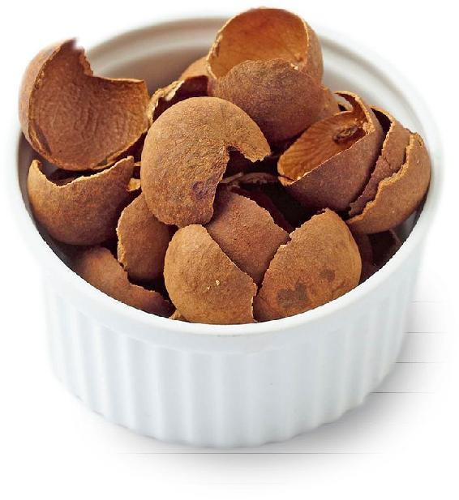
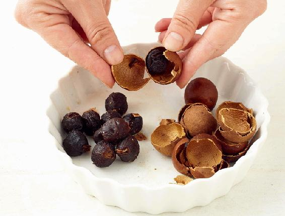
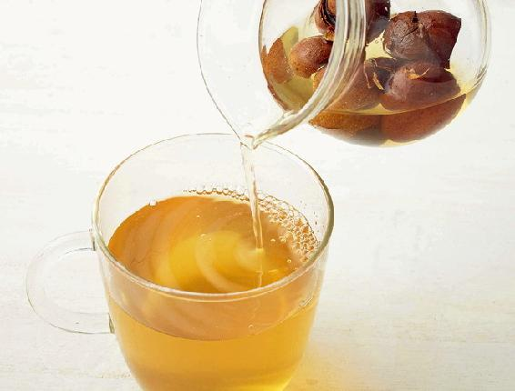
- 荨麻疹急性发作，说明体内风邪较重，桂圆壳的用量要大，效果才好。
- 有些桂圆为了外观好看、防虫会涂黄粉，这种桂圆壳不要用。
- 荨麻疹用蜂蜡蒸鸡蛋和桂圆壳1斤煮水喝，很有效。
——9群读者
- 亲身经历，前两天第一次急性荨麻疹发作，开始是脖子，很快脸上、下肢、手心、脚心都痒得很。去医院，医生建议输液，开了抗过敏的西药。我没有吃药，直接拿出冬天囤下来的桂圆壳，也不清楚有没有500克，煮水当茶喝，三天就消了。
——40群g|oria
- 桂圆壳煮水对荨麻疹真的管用。昨晚吃了药稍微有所缓解，今早又有点复发，之后一直煮桂圆壳水喝，现在基本上不痒了。
——6群读者
- 手部不小心被蚊虫袭击了，引发了虫咬皮炎即急性荨麻疹。西药让我的胃不舒服，尝试了陈老师推荐的龙眼壳煮水喝，每天一碗，连续七天，剩余的就用小毛巾蘸着龙眼壳水浸洗一下手部，擦干以后我还涂了菜籽油。奇迹很快出现，睡眠恢复到了生病前的正常状态，身体排毒也很好，没有因为外界环境有寒有风而头疼，手部皮肤也变得光滑如初，没再痒过。
——27群读者
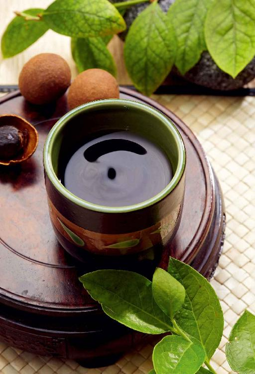
调理慢性荨麻疹，润肤止痒，喝抗敏酸梅汤
如果经常发作荨麻疹，或者一直反复不好，可以喝这道茶饮来调理。
经过多年实践，我在这个方子里加了甘草，抗过敏和修复皮肤的作用更好。
抗敏酸梅汤
【原料】
乌梅100克、生地黄150克、甘草30克。
【做法】
- 把全部原料分成10份，分别装入10个茶包袋中。
- 每次取1袋，放入随身杯。冲入沸水，闷20分钟后当茶喝，可以反复冲泡。有条件煮水更好。
【功效】
- 调理荨麻疹。
- 滋阴养血。
- 润肤止痒，抗过敏。皮肤干燥并且容易过敏发痒的人可以常喝。
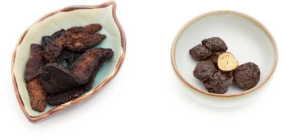
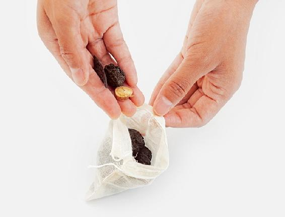
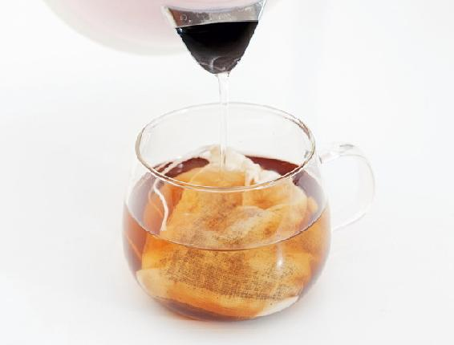
- 喝这道酸梅汤时，不要同时吃猪肉或血豆腐。
- 有慢性荨麻疹的人，要注意防风，不要吃太多鱼、虾、蟹、鸡蛋、牛奶之类的“发物”。
- 我之前身上长风疙瘩，按老师对应的茶方喝好了。
——极简主义者
- 抗敏酸梅汤，荨麻疹发作喝了效果不错！
——简单着幸福
- 乌梅10克、生地黄15克是大人用量。3岁多宝宝我就给减半了。我用养生壶炖煮了20分钟，宝宝过敏红疙瘩起在手臂和腿上，喝了没多久疙瘩就变淡了，今天已不明显了。
——29群读者
- 我一直反复过敏，也是喝老师推荐的乌梅地黄茶才有效果的。而且我反复试验了好几次，没有比这效果更好的了。自从喝了几次乌梅地黄茶后，再也没有反复过敏了。
——29群磊子
- 我前一阵小腿痒，表面看不出什么。那几天经常喝加强版顺时粥，还有乌梅汤，不知不觉就不痒了。
——37群海丽
很多人小时候或年轻时感染了水痘，长大后当身体湿热重时，就可能发生带状疱疹。根据我家的经验，用这道清毒利湿茶调理是比较有效的。
清毒利湿茶
【原料】
马齿苋300克（干品）、薏米600克、红糖100克。
【做法】
- 薏米放入无油的炒锅，用小火炒至微黄，用料理机打成粉末。
- 马齿苋用剪刀剪碎，和薏米粉末、红糖一起分成10份，装入10个茶包袋。
- 每次取1袋，冲入沸水，闷20分钟后饮用，可以反复冲泡。有条件煮水更佳。
【功效】
- 带状疱疹发作时的保健茶饮。
- 抗病毒，祛湿热，降血脂。
- 调理皮肤湿癣。
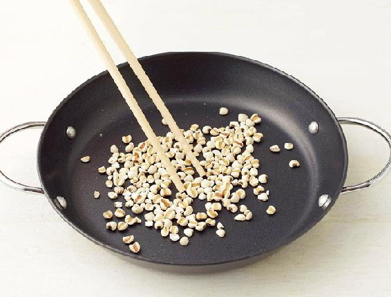
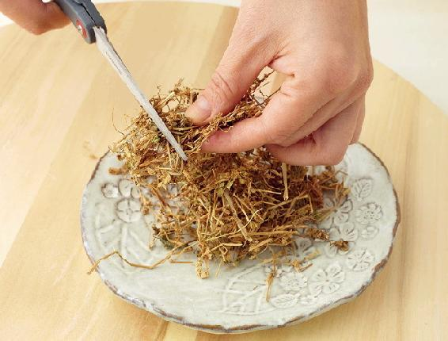
把这道茶饮的原料煮成粥，每天当早饭吃效果更佳。
读者评论
- 前阵子爸爸喷农药时脸上过敏了，后来发展成带状疱疹，打吊瓶两周多都不顶用，去医院开了药也一直好不了，结不了痂。后来来到我这里，我按老师的小茶包，让他喝了鱼腥草和清毒利湿茶，大概三四天结的痂就掉了，从此老人不那么固执了，我让他们喝啥他们就喝啥。
——向海的太阳
- 感染了带状疱疹，喝马齿苋榨汁和马齿苋薏苡仁红糖茶，现在患处基本上都结痂了。
——桂
- 带状疱疹，用马齿苋和薏米煮水喝，还有每天一斤鱼腥草榨汁喝。我是吃了一星期好的，没有发展。
——9群读者
- 马齿苋真的好好，我爸爸身上痒痒的疱疹都好了，就是用马齿苋的汁涂抹疱疹，又按照老师的马齿苋薏米粥方法吃好的。
——香英
- 这次用马齿苋、炒薏米和红糖，对带状疱疹的治疗起了关键性的作用。它抗病毒，祛湿热，我用它泡水喝，一整天没有味了再换新的。就这样几天，患处很快就结痂了。
——桂
- 我儿子疱疹性咽峡炎，吃了两天的马齿苋，喉咙里的包消肿了，但还有点红。今天再吃一次。
——岁月静好
预防皮肤湿疹小茶方：芹根甘草茶
植物越接近根部，药性越好。大家一般是把芹菜根切下来扔掉，很可惜，其实它是肾脏系统的清道夫，可以帮助肾脏排出湿毒。
肾脏系统湿毒淤积有什么后果呢？会引起湿疹反复发作，下巴长痘。特别是男性，许多人爱喝酒，吃很多肉食，容易造成肾脏系统有湿热，有的人会在腰上长湿疹，有的人则会出现小便疼痛、小便出血甚至像米汤一样发白、混浊等症状。
平时多用芹菜根，可以帮助身体把这些毒及时排出去，让肾脏系统保持清洁。
芹根甘草茶
【原料】
干药芹根60个、甘草60克。
【做法】
- 药芹根切碎，和甘草一起分成10份，分别装入10个茶包袋。
- 每次取1袋，放入杯中，冲入沸水，闷20分钟后饮用。
【功效】
- 调理恶心、反胃、呕吐。
- 清胃，解毒。
- 预防皮肤湿疹。
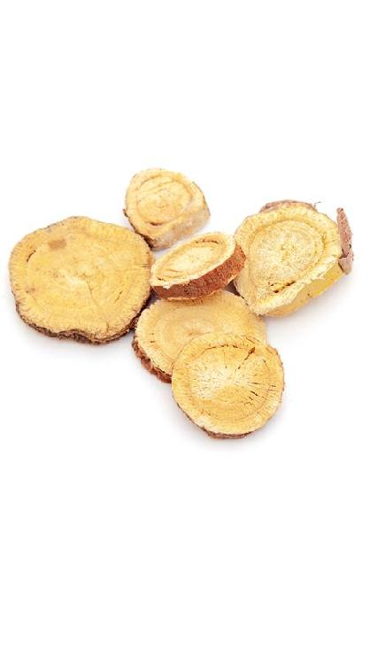
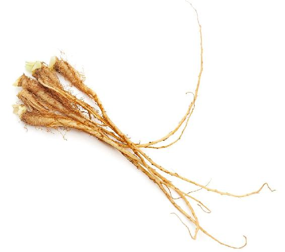
怎样使用芹菜根？
把芹菜根用热水加上面粉泡洗10分钟以上，冲洗干净，再用开水烫一下。可以直接用新鲜的，也可以晒干备用。
这个方子里的甘草也非常重要。甘草既能解毒抗敏，又有助于皮肤修复。
读者评论
- 我妈妈有湿疹，我应该是遗传的湿疹，每年春夏痛苦不堪，医院不知跑了多少次都没有用。给妈妈买了允斌老师的书，她在书里找到这个方子。我们从立春开始喝，一周三天，一开始没放在心上，直到昨天妈妈提醒才发现，今年已入夏这么久了，我和妈妈的湿疹都没有复发，简直不敢相信，陈年顽疾就被允斌老师这么简单便宜的一个小茶方给治愈了。
——点多多
- 儿子小儿湿疹又复发，忍不住地挠，痒痒。他爸带他去医院开了一堆药，吃的、擦的。我坚持要用陈老师的食方，我不想儿子小小年纪就吃这么多西药。和老公约定，让孩子喝一周试试，不行再吃药。哄着儿子喝了一周，肉眼可见的湿疹面积减小，红肿消退，结痂。不信中医养生的老公这下彻底信服陈老师了。
——14群小迪
接触过敏源或日晒后，皮肤出现颜色发红的小疹子，可以用新鲜鱼腥草榨汁喝。
鱼腥草汁
【原料】
新鲜鱼腥草500克。
【做法】
新鲜鱼腥草洗干净，
榨成汁饮用。
【功效】
有助于皮肤出现以下问题时的应急护理：
- 湿疹急性期（颜色发红）。
- 日光性皮炎。
- 皮肤过敏引起小红疹（不是大块的荨麻疹）。
读者评论
- 去年手上起了湿疹，有白头，特别痒，抓破流水的那种。买了鱼腥草榨汁喝，结果喝过第二天白头就干瘪了。今年一点都没有痒痒，往年痒痒得都抓破了。
——蓝天白云
- 每次长带状疱疹，喝两次鱼腥草水，马上就不痒了，很快就可以好起来。
——陈巧莹
- 前年腰部起了疱疹，连续喝了五天的鱼腥草茶，大大见好。后续又喝了几天就好了，一点药都没用！
——百合